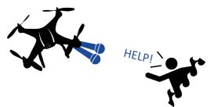

Signal Processing Cup 2019
Background
The Signal Processing Cup project was one of the most enjoyable experiences throughout my time at university. Details providing background to the project can be found at this link. A summary of the task was to accurately estimate the direction of a sound source (azimuth, elevation) using recordings from an 8-channel cube-shaped microphone array embedded in a flying UAV. The acoustic noise produced by the UAV made the task extremely challenging. A team of 8 undergraduate students, including myself under the supervision of Dr Vidhyasaharan Sethu set out to develop a solution to this problem.
Solution
The first stage of developing our solution involved conducting a literature review of current strategies in sound source localisation in low signal-to-noise ratio (SNR) environments. Leveraging this knowledge and analysing the audio recordings we developed a solution that addressed the weaknesses of the provided baseline. At a high level our solution involved improving the baseline sound source localisation in two ways:
- Noise reduction and Wiener Filtering
- Viterbi Algorithm for multiple-frame Tracking
Results
Our solution performed very well, allowing our team to progress to the Final Competition held at ICASSP 2019 in Brighton, United Kingdom where we also presented our paper. In this final competition our team came second in the world out of the 20 teams that competed. A paper was published discussing the results of the competition and can be found here.
Reflection
The organisers of the competition asked us for some feedback and this was what I had to say: What you learned during the event? I learnt a lot from this SPCup competition, from how direction of arrival can be determined using signal processing techniques to how a wiener filter can be applied to reduce the noise in recordings. Furthermore, I learnt the importance of testing and validation and how it can be utilised to evaluate the effectiveness of strategies as well as determine optimal parameters to produce an algorithm that is accurate and robust. What were the most enjoyable/difficult/exciting moments? There were so many enjoyable and exciting moments that came out of this competition as it was an intellectually stimulating and challenging experience. I really enjoyed doing research on various strategies that could be employed in producing more accurate sound source localisation results. It was always exciting whenever new strategies developed from our research led to improved performance of our system. How you learned about the competition and why did you choose to join it? I learnt about this competition through my digital signal processing lecturer Dr Vidhyasaharan Sethu who was building a team to represent the University of New South Wales in this competition. I chose to join the competition as I have a passion for signal processing and saw this competition as an opportunity to develop my signal processing skills. Furthermore I believed I would gain a deeper understanding of how I could apply signal processing methods and techniques to solve practical, real world problems.
Further Details
For further details about this project please feel free to contact me at prasanth.parasu@gmail.com